Your first game
Choose one of eight games and an unlocked level. Open the question-mark help for the rules, or use a hint to practice.
From the first tap to a shared little victory.
Select an image to take a closer look.
Actual screens from the current Korean app. Gameplay and scores are examples. App language support is not implied.
Choose one of eight games and an unlocked level. Open the question-mark help for the rules, or use a hint to practice.
Create a named pack in Photo packs and add pictures with the photo picker. Use your photos alone or mix them with built-in photos.
Adjust sound, vibration, large text and reduced motion in Settings. Resetting records keeps levels, stars and packs.


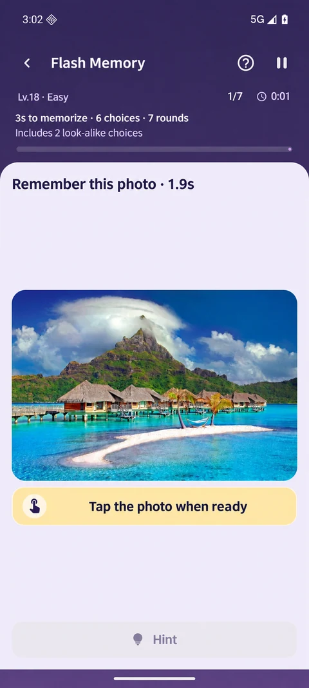
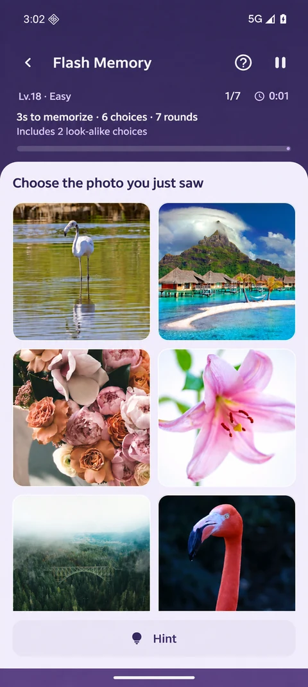
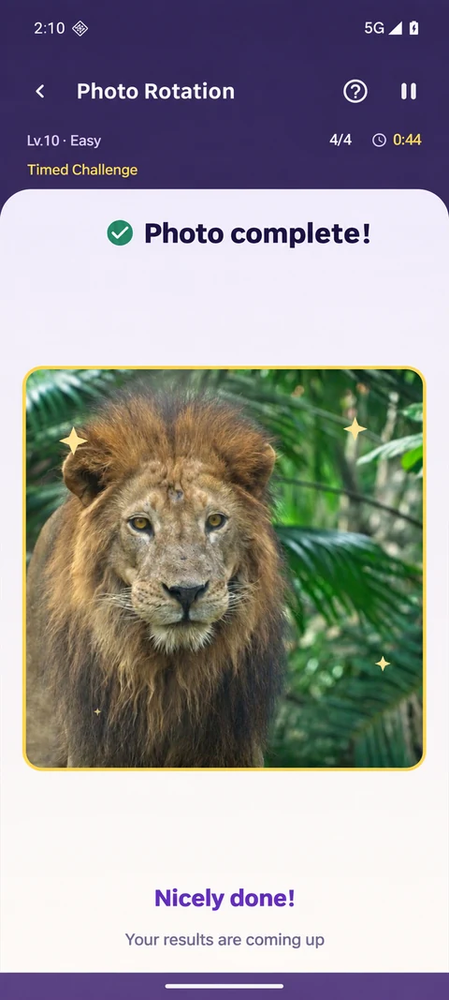

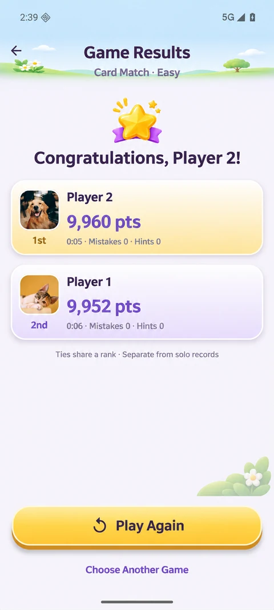
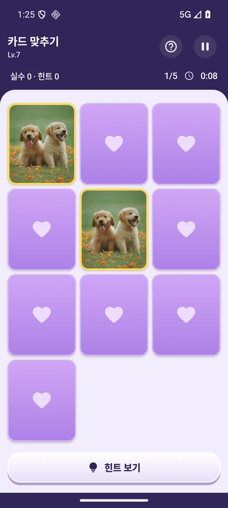
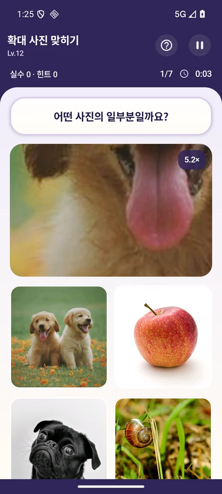

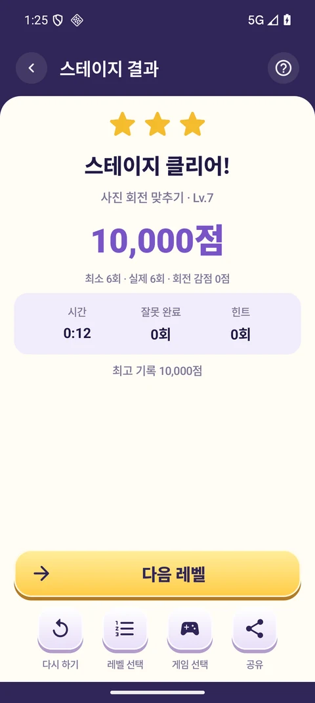
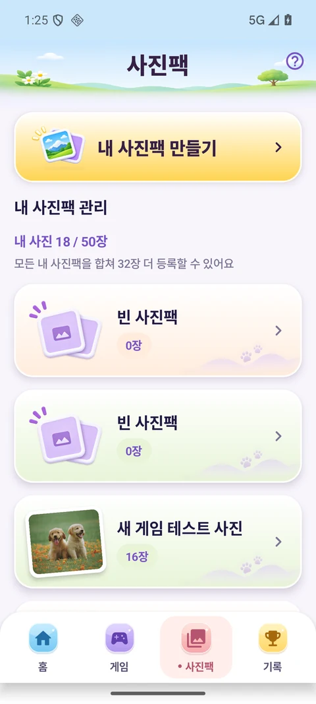
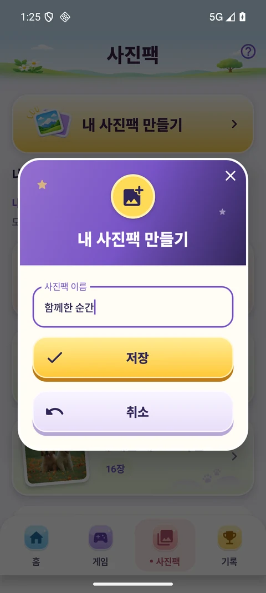


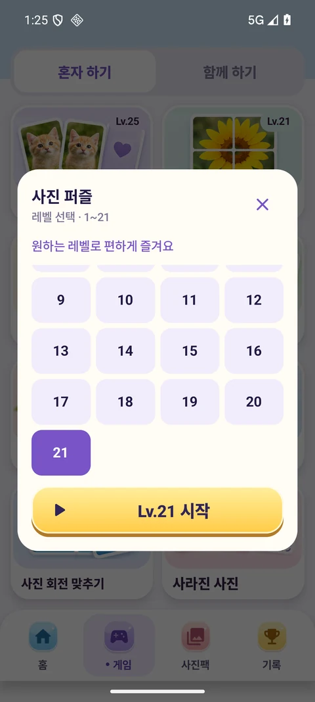
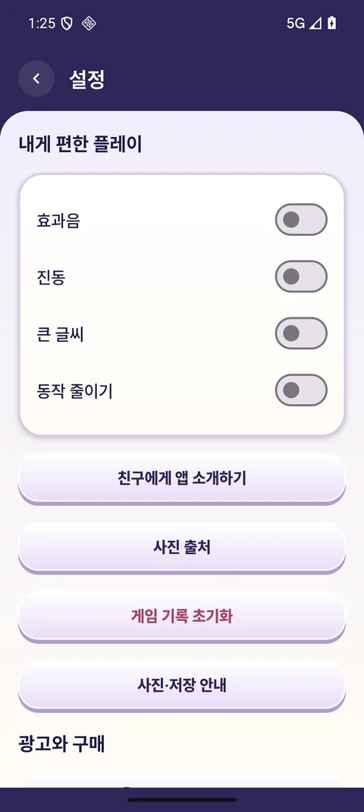
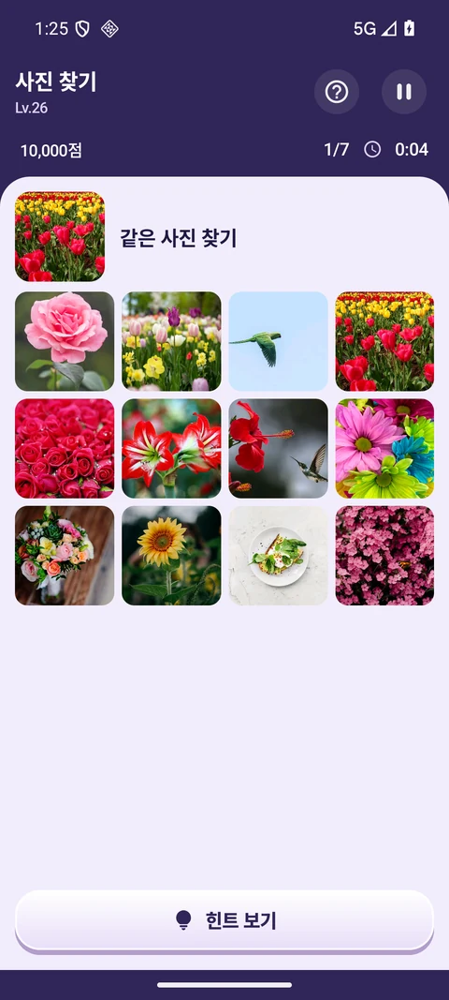
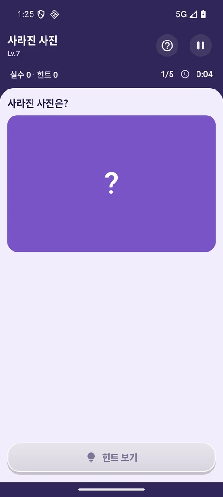
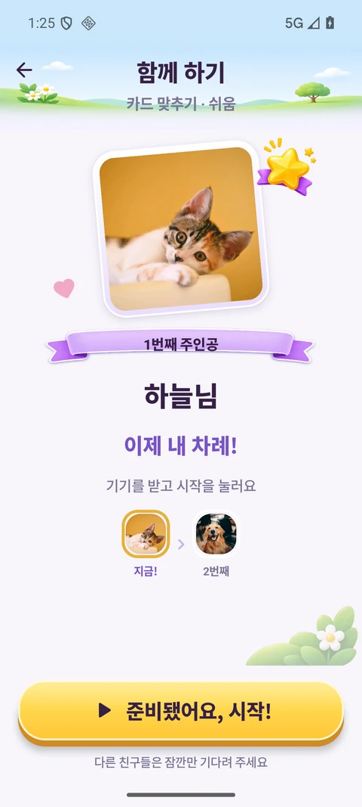
21 actual screens using supplied sample photos. Together mode gives each player different questions at the same difficulty.